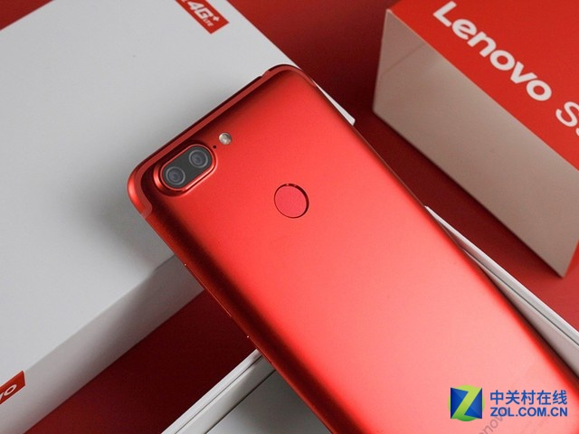
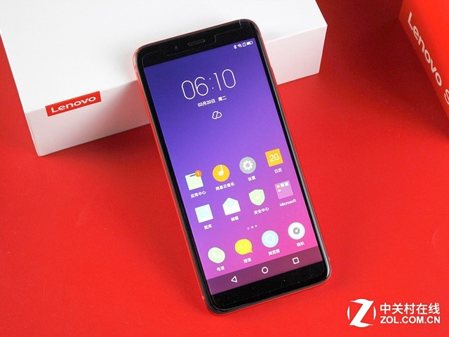
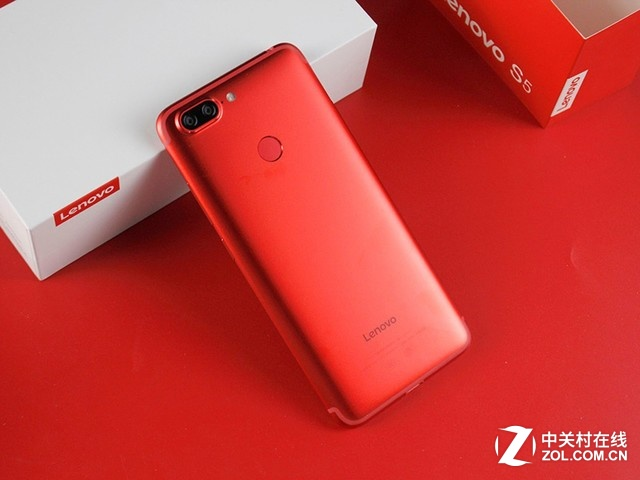

最近热销的Lenovo S5，其设计感是十分不错的，自称是“更符合国人手感”的手机。Lenovo S5支持人脸识别，可以在亮屏时迅速采集用户的面部识别点，并支持双击亮屏，在易用性方面表现还算不错。人脸识别还可以应用在支付、访问数据等场景，实测解锁速度还算不错，安全性也有保证。
千元玩转人脸解锁 京东入手Lenovo S5
联想S5（3GB RAM/全网通）
电商报价
京东商城 ￥999天猫商城 ￥999ZOL商城 ￥1099

这部Lenovo S5采用了5.7英寸18:9全面屏，双面2.5D玻璃机身设计，让灵动如影随形。炫彩高光外观，结合潮流时尚纹理，流光溢彩，透出波光明灭如梦似幻的光影，带来超越感官的视觉感受。
千元玩转人脸解锁 京东入手Lenovo S5

Lenovo S5搭载了高通骁龙625移动平台，内置3/4GB内存+32/64GB存储，预装ZUI 4.0系统，变频省电4.0，100级AI美颜自拍，同时还支持面部解锁。从这个面板数据库来看，这样的手机哪怕千元都是不为过的。
千元玩转人脸解锁 京东入手Lenovo S5

Lenovo S5采用了3000毫安时的电池，支持变频省电4.0系统，两天一充，重度使用23小时，独创Anti-Aging Algorithm算法，让手机拥有长寿充电，得益于变频省电4.0，可以连续游戏10个小时。搭载了全新的ZUI4.0系统，加入了进程速冻功能，独创安卓应用第三态，支持U-touch 4.0功能，支持全面屏手势操作。ZUI4.0还加入了一个全新的功能——AI乐语音，可以通过“一句话”进行发红包、打开地图导航等常规操作。
Lenovo S5的强势是我们始料不及的，但是这部手机的实力也是非常强悍的，堪称千元级别产品最值得入手存在。